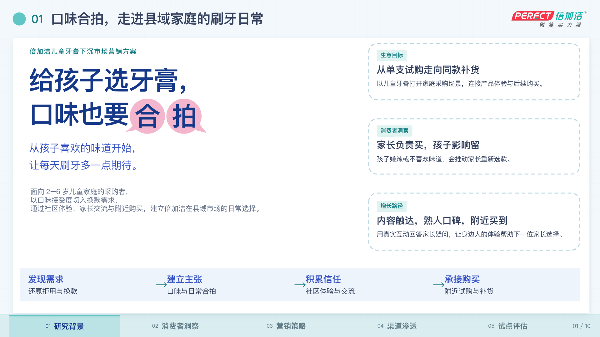
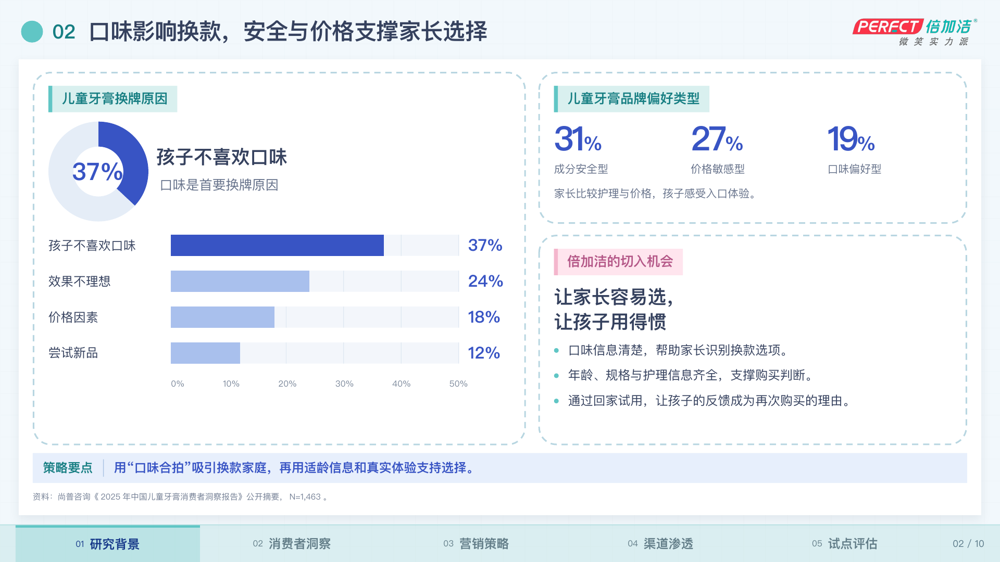

FILE / 01 · BEIJIAJIE
口味合拍A taste of trust.
让刷牙，成为合拍的日常。
消费者洞察 / 营销提案


01项目与角色OVERVIEW
买单的是家长，
使用的是孩子。
课程研究与后续方案整理
围绕儿童牙膏的下沉市场机会，将家庭采购过程拆成两个角色：比较适龄、护理与价格的家长，以及直接感受口味的孩子。
项目问题
一次购买之后，什么会影响继续使用、换款与补货？新版方案把重点收敛到 2–6 岁儿童家庭，探索口味接受度如何进入决策。
我的工作
参与问卷、用户访谈、数据清洗分析及营销路径设计。
项目产出
消费者决策链、传播主张、海报概念、短片脚本与触点规划。
02洞察与判断INSIGHT
一次拒用，
可能改变下一次购买。
现有方案把孩子对口味和刺激感的接受程度作为沟通切入点。价格、适龄和护理信息帮助家长比较，孩子的反馈则可能触发换款。
家长比较购买尝试孩子反馈换款 / 补货
让「口味合拍」
成为沟通入口。
给孩子选牙膏，
口味也要合拍。
口味也要合拍。
把功能信息放进亲子日常，用可感知的体验表达帮助家长理解产品。便利性作为使用辅助，不替代口味接受度这一主线。
THE PROJECT NOTEBOOK
口味合拍 ／方案手记

01
End of this chapter.
02下一页，继续让想法发生。
01—02 / 10
点击下页向上翻开 · 点击右下角放大阅读
03内容与执行EXECUTION
把主张，
放进生活画面。
从看见，到愿意试一试。
短片以亲子刷牙的日常反应切入，海报承担产品与主张识别；体验卡、门店和社群承接进一步了解。
短视频发现附近门店体验家长社群试购同款补货
不同触点各自承担发现、体验、交流与购买承接的任务，避免每个渠道重复同一句卖点。
FROM A POSTER TO PARTICIPATION
海报之后，给体验一个入口。
合
亲子口味合拍群
体验交流 · 附近购买今天 19:30
这次，口味合拍吗？
回家记录孩子的使用反应。
合拍，就记住这一款。
草莓味 · 2–6岁 · 社群交流与附近购买04结果与思考REFLECTION
方案的价值，
在于可验证。
营销方案
拟议试点评估
内容咨询、试购反馈、孩子使用接受度、推荐来源、同款补货与渠道成本。
下一步：回到真实的家庭。
把概念拿到小范围家庭试用中，观察家长说的选择理由与实际补货行为是否一致，再决定传播重点与体验机制。